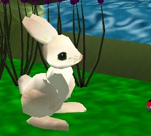

- Method Tutorial (5 points)

Open the Alice animation system and choose Open World from the File Menu (this should automatically open when you open Alice). Click on the Tutorial tab, and choose Tutorial 2. Work through the entire tutorial.
- Kangaroo (10 points)
Methods are used to define behaviors for an object. For example, in lecture and in the text, we have used built-in methods such as roll and move and created methods to make objects (i.e. cheerleaders and frogs) jump.

Create a new Alice world with a kangaroo (from the Animals gallery). Add a new method called hop that makes the kangaroo hop into the air and land again while moving forward a short distance. Demonstrate your new method by having the kangaroo hop several times.
- Flap (10 points)

Programming Project 2.1 (p 37) asks you to create an Alice world in which a bird flies across the sky. Use an appropriate class from the Animals gallery (i.e. the pterodactyl class) to make the bird fly. Add a method called flap to the bird that causes both wings to move up and down in unison one full stroke while move the bird forward a set distance.
-
Rowboat (15 points)

Programming Project 2.4 (p 38): Create an Alice world that shows a person rowing a boat across the water. Use an appropriate person from the People gallery and an object created from the Rowboat class in the Vehicle gallery. Add a method called row to the person that causes the person to make one stroke with both oars and consequently causes the boat to move forward a randomly determined distance.
-
Random Numbers (15 points)

Programming Project 2.7 (p 38) asks that you create a world in which three beetles are seen scurrying around the ground. Instead of beetles, create an object of your favorite animal (or bug) class. Add a method called scurry that causes the animal to turn in a random direction and then move forward a random direction. Duplicate that animal twice and call the scurry method of all three objects several times from my first method.
- Kangaroo with Parameters (10 points)
Modify your world with a kangaroo from last lab so that the hop method accepts a parameter that specifies the jumping distance. Demonstrate your new method by having the kangaroo hop several times.
- Search & Rescue (20 points)

Programming Project 2.8 (p 38): Create an Alice world that shows a search and rescue opertation in which a helicopter flies in a pattern above the ocean, occasionaly stopping to hover for a while as if looking for something. Eventually the helicopter swoops in to save a person who was adrift. Create a hover method the helicopter that accepts the number of seconds it should hover as a parameter. Create a search method and a rescue method to handle those aspects of the operation.